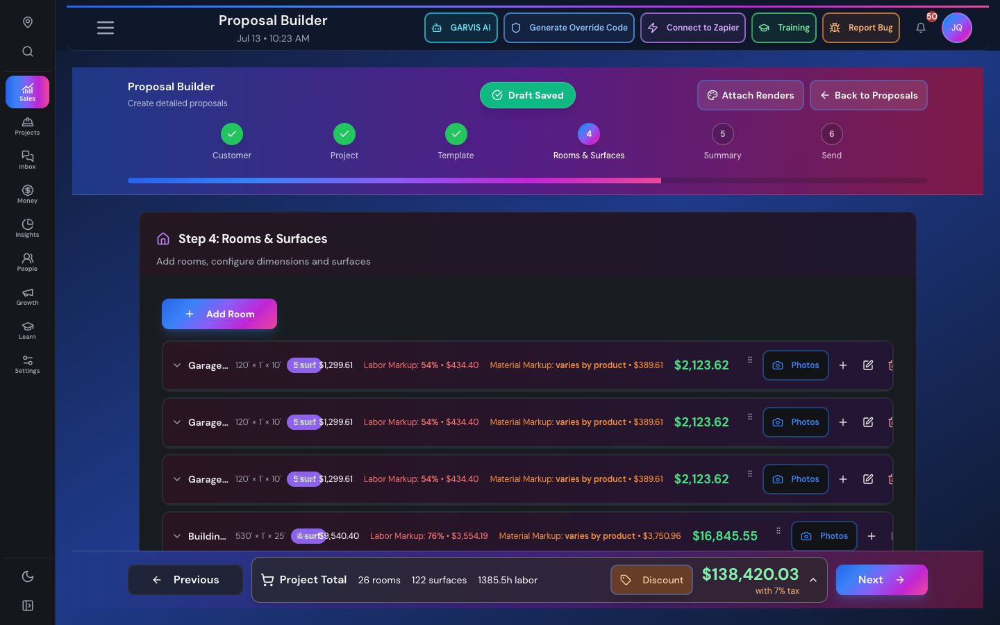
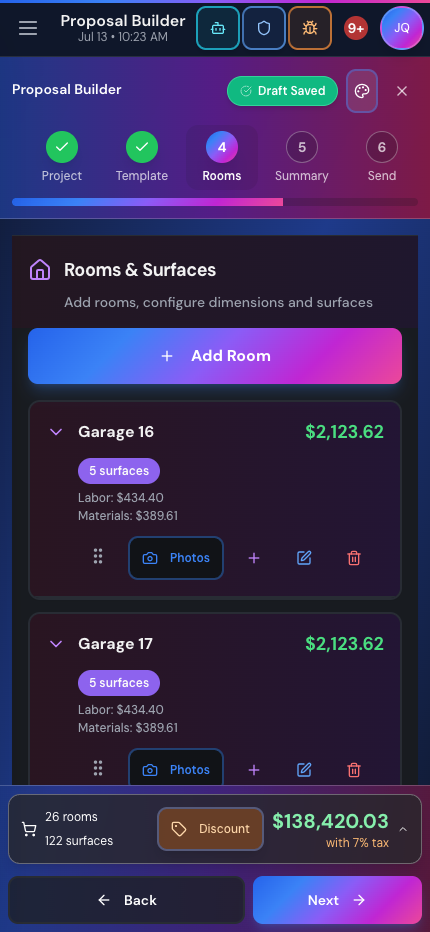
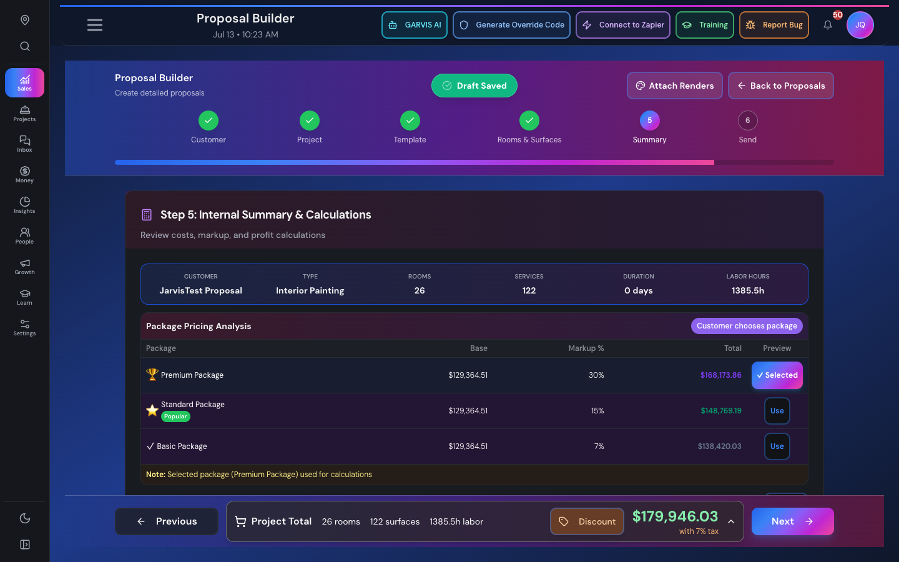
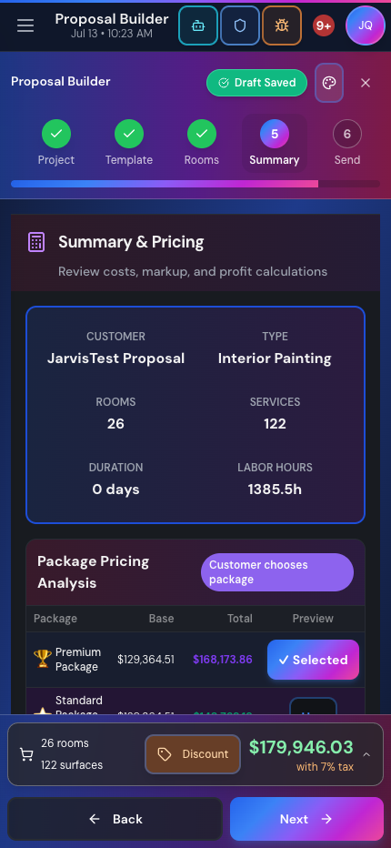
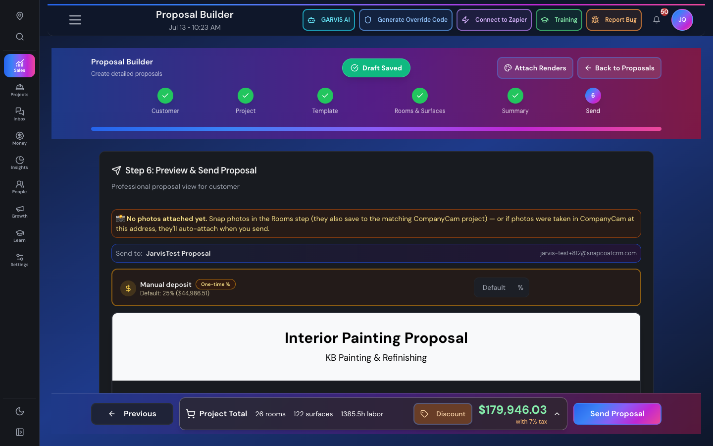
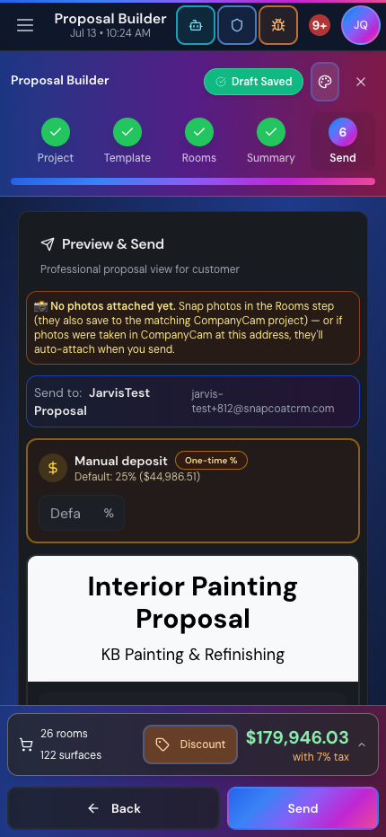
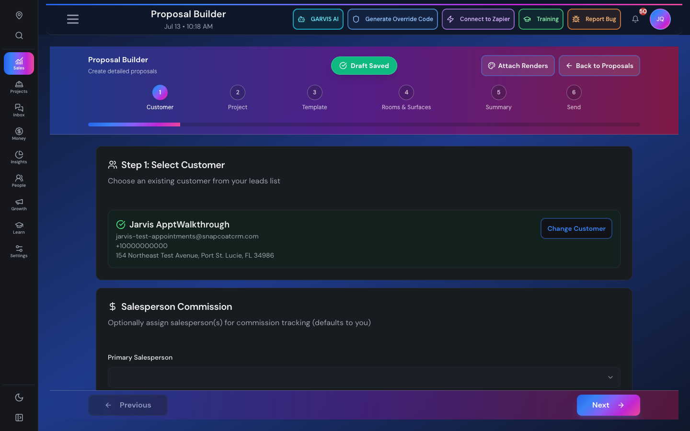
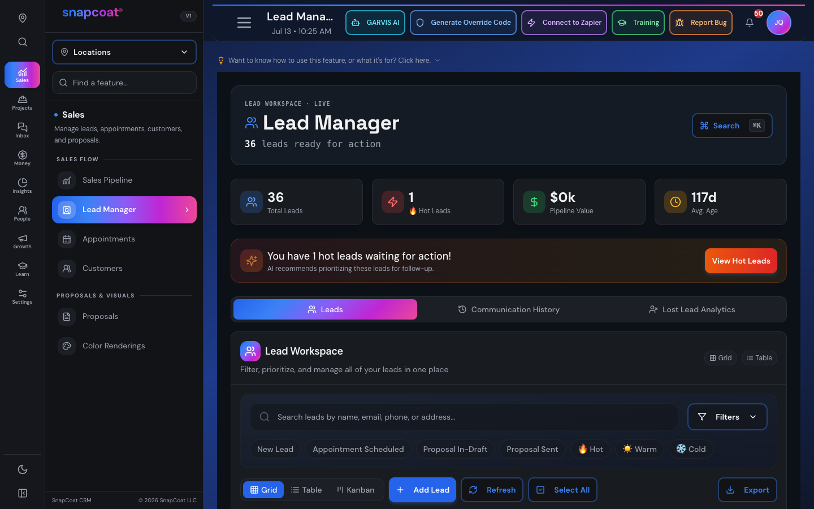

Jarvis · Jul 13, 2026
Proposal Builder — UX Audit & Redesign Plan
Full pass through all 6 steps on desktop (1440px) and mobile (430px) with a real 26-room / 122-surface proposal, plus a line-by-line read of the 14,800-line builder code. Nothing has been changed — this is the findings + recommendations for your approval.
The short version: the builder's bones are good — the 6-step flow, the live cart, the data all being there. But it's still wearing the old heavy purple-gradient skin from before the weekend redesign, navigation is strictly linear (the step bubbles aren't tappable), and the Rooms & Surfaces step buckles on big jobs — 26 rooms means endless scrolling with no way to jump around, plus a real layout bug where badges overlap prices and action buttons clip off-screen. My recommendation is a 3-phase "Fresh Coat: Builder Edition" — same data, same pricing logic (untouched, it's protected), dramatically better navigation and readability on both screens.
What it looks like today
Step 4 — Rooms & Surfaces (the workhorse)

Desktop: "5 surf" badge collides with the price, room names truncate at 1440px, delete button clips off the right edge.

Mobile: each room ≈ a full screen-height card. 26 rooms = a very long thumb workout, no jump list.
Inside each room the surfaces render as a 10-column table (Surface, Coats, Qty, Paint, Gal, Labor Hrs, Labor, Material, Total, Actions). On mobile 7 of those columns hide and the data gets crushed into a 10px two-line cell ("3c · 120 sf · 2.4 gal"). Editing one surface can touch three different dialogs (surface editor, quantity dialog, labor-hours dialog).
Step 5 — Summary

Desktop: 6-column stat strip + package analysis table. Solid data, dated chrome.

Mobile: the package table gets clipped mid-row; stat grid squeezes to 2 columns.
Step 6 — Preview & Send

Desktop: photo warning, deposit override, then a full duplicate of the step-4 scope-of-work stacked in collapsibles.

Mobile: same stack, very long. The primary "Send" action shares a crowded bar with the cart.
The header/footer chrome

The blue→purple→pink gradient hero band + gradient footer — the exact style we retired everywhere else last weekend.

The target language: quiet panels, stat tiles, mono numerals, gradient reserved for small accents (weekend redesign).
Findings (ranked)
- bugRoom-row layout collision: the surface-count badge overlaps the price text and the delete action clips off the right edge on desktop collapsed rows. Visible in the screenshot above with real data.
- quick winStep indicator is decorative only: the step bubbles are hard-coded non-clickable (pointer-events-none). To fix a room from the summary you have to hammer Previous. Completed steps should be tappable.
- structuralTriple-nested scrolling on step 4: page scroller → room accordion → horizontally scrolling table with its own sticky header. Disorienting on mobile, fights the outer scroll.
- structural10-column table on a phone: most columns hide on mobile and the leftovers render at 10px. It's a table pretending to be a card; it should just be a card.
- structuralNo way to navigate big proposals: 26 rooms is pure scroll — no room index, no collapse-all, no search/jump.
- structural3 dialogs to edit 1 surface: surface editor, quantity dialog, and labor-hours dialog are separate modals doing one job.
- structuralStep 6 duplicates the entire step-4 scope-of-work inside collapsibles — a second copy of the same room/photo data making the send page enormous.
- quick winOld theme, hardcoded ~8×: the 5-stop gradient literal is copy-pasted throughout (step nodes, header, footer, buttons) with no token — and it's the pre-weekend look. Also inconsistent button styles and hand-rolled overlays instead of the shared dialog.
- quick winCart vs. Next button crowding: the live cart expands upward over content and shares the footer with the primary CTA; on mobile they compete for the same space.
- quick winDev logging left in the cart's hot render path (fires on every price recalc).
Recommendation — "Fresh Coat: Builder Edition"
Extend the weekend design system into the builder: warm-paper light / job-board dark surfaces, Space Grotesk display headers, mono tabular numerals for money, and the brand gradient demoted from wall-to-wall paint to small accents (active step, progress bar, primary CTA) — same as the nav pills. All pricing math stays byte-for-byte untouched; every dollar figure renders read-only from the same calculations.
Phase 1 — Reskin + navigation quick wins
low risk · no logic
- Retire the gradient hero band → slim one-row header (back · title · draft badge · step chips), Fresh Coat panels throughout, tokenize the gradient (one variable, not 8 copies).
- Clickable step indicator — completed steps jump directly, validation still guards forward jumps.
- Fix the room-row collision bug + clipped actions.
- Footer cleanup: total + Next stay primary; cart breakdown opens as a proper bottom sheet instead of expanding over content. Remove dev logging.
Phase 2 — Rooms & Surfaces overhaul
medium · display only
- Room navigator: sticky compact room index (chips w/ price) + collapse/expand all — 26 rooms becomes two taps, not two minutes of scrolling.
- Mobile: surface cards (name, chips for coats/qty/gallons, price right-aligned in mono) replacing the crushed table; tap opens the editor.
- Desktop: cleaner responsive table with column priorities and one scroller — kills the triple-nested scrolling.
- One surface editor — fold quantity + labor-hours into the surface dialog as sections instead of 3 separate modals.
Phase 3 — Summary + Send restructure
medium · display only
- Summary: Fresh Coat stat tiles (like Lead Manager) + package analysis as tappable paint-chip cards on mobile instead of a clipped table.
- Send: replace the duplicated scope-of-work with a pre-flight checklist (Photos ✓ · Deposit · Signature method · Recipient) + a "review scope" link that jumps back to step 4 — the send page becomes one screen.
Protected areas, explicitly: zero changes to pricing/totals/markup/labor/material calculations, deposit math, or the customer-facing proposal document and its email sending. This is chrome, layout, and navigation only. Each phase ships to DEV separately with before/after screenshots for your sign-off.